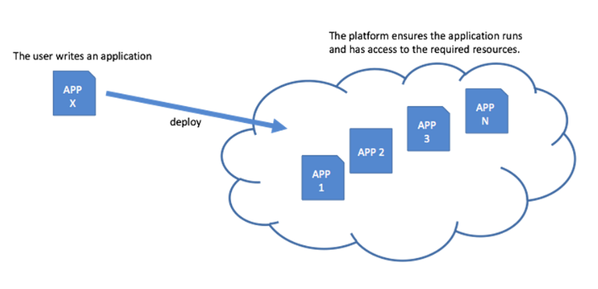
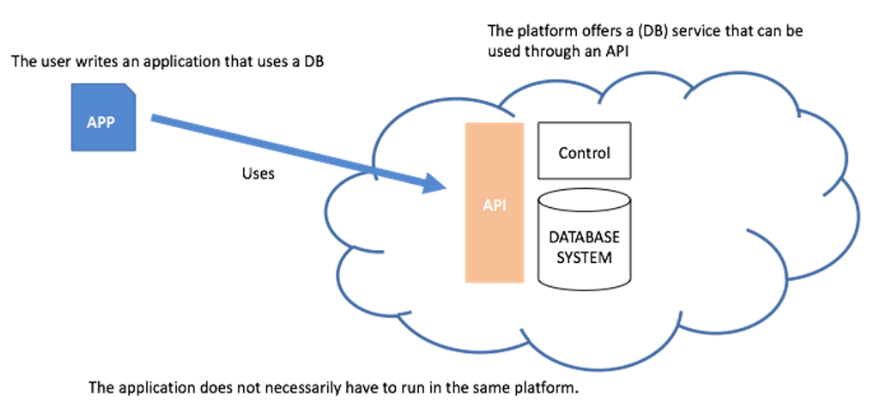

Teórica 03
Serviços de Cloud
- Os serviços de cloud podem ser divididos em 3 abstrações principais:
- Infrastructure-as-a-Service (IaaS);
- Platform-as-a-Service (PaaS);
- Software-as-a-Service (SaaS).
Infrastructure-as-a-Service (IaaS)
-
Providencia recursos de hardware virtualizados como computação, armazenamento e networking;
-
Os recursos são alocados on demand e só se paga consoante o seu uso;
-
Exemplos:
- Para computação:
- Amazon EC2;
- Google Compute Engine.
- Para armazenamento:
- Amazon S3.
- Para computação:
-
Tem data centers espalhados pelo mundo, cada um com cerca de 80 000 servidores.
Platform-as-a-Service (PaaS)
-
Oferece encapsulamento de um ambiente de desenvolvimento abstrato que pode ser usado para desenvoler, correr, ou dar deploy de apps.
-
Exemplo:
- Google App Engine.
-
Baseia-se em instâncias de containers;
-
Suporta múltiplas linguagens, ferramentas e APIs;
-
Providencia controlo de versões, testes, monitorização e features de logging.

Software-as-a-Service (SaaS)
- Contém aplicações completas ou software genérico, tal como bases de dados;
- Oferecido como um serviço e acessível através de um serviço web ou através de um web browser;
- Exemplos:
- SalesForce.com;
- Google Apps (p.e. Gmail).

OpenStack
- Software Open-Source que permitem a criação de clouds públicas e privadas;
- Controla pools de computação, armazenamento e networking através de um datacenter;
- Controlado através de uma dashboard ou via a API da OpenStack.
Cinder
- Armazenamento em bloco
- Virtualiza a gestão de dispositivos de blocos de armazenamento;
- Fornece aos end users uma API de auto-serviço para pedir e consumir recursos sem ter conhecimento acerca da verdadeira localização ou do tipo de dispositivo em que se encontra o armazenamento.
Swift
- Grande disponibilidade, distribuídos, armazenamento de objetos/blobs eventualmente consistentes;
- Ideal para guardar dados não estruturados que podem crescer sem fronteiras.
Neutron
- Software-Defined-Network (SDN)
- Focado em fornecer Networking-as-a-Service (NaaS) em ambientes de computação virtuais;
- Coloca a topologia da rede e o endereçamento de forma abstrata.
Telemetry
- Serviço de Monitorização
- Coleciona métricas de monitorização para recursos físicos e virtuais;
- Gera métricas para futura análise;
- Dá trigger de ações quando atinge certas regras (p.e. lançar mais instâncias de uma dada VM quando um threshold de CPU é alcançado).
De IaaS para PaaS
- De alocação gerida e provisionamento de recursos para infraestrutura gerida;
- Recursos atuais tornam-se transparentes;
- Foco na aplicação que é o objeto de deploy;
- A interface é o ambiente de programação com APIs para serviços IaaS/SaaS;
- O utilizador pode focar-se na funcionalidade para dar deploy ao invés dos recursos necessários para isso.
De PaaS para SaaS
- Providencia serviços específicos;
- Gere componentes de software que exportam as suas APIs tradicionais;
- Sistemas de Gestão de Bases de Dados são exemplos disto;
- Não tem item de deploy - a BD está exposta através do cliente e é utilizada como uma BD tradicional com uma configuração mínima e acesso remoto.
IaaS, PaaS e SaaS: sistemas distribuídos complexos
- Virtualização;
- Provisionamento;
- Monitorização;
- Reporting;
- Billing;
- ...
- Interoperação entre os pontos acima mencionados.
Vantagens IaaS, PaaS e SaaS
Conveniência
- IaaS
- Evita custos upfront na gestão da infraestrutura e hardware;
- Permite o deploy "fácil" de aplicações legacy.
- PaaS
- Foca-se no desenvolvimento da aplicação em si e nos seus requisitos;
- Desenvolvimento, deployment, debugging e ferramentas de benchmarking powerful já no seu local.
- SaaS
- Aproveita componentes existentes (bases de dados, servidores de aplicação e servidores web).
Velocidade
- IaaS
- Infraestrutura já se encontra instalada e configurada.
- PaaS
- Framework de desenvolvimento já se encontra instalada e configurada.
- SaaS
- Rápida integração de soluções de software em cloud.
Elasticidade
- IaaS
- Ilusão de recursos virtuais infinitos;
- Aumento e diminuição do poder de computação, espaço de armazenamento e outros recursos on demand;
- Precisa de ser configurado manualmente ou que se recorra a apps third-party.
- PaaS e SaaS
- Não é necessário gerir a elasticidade manualmente.
Desvantagens IaaS, PaaS e SaaS
Perda de Controlo
- IaaS
- Perde-se o controlo sobre o hardware específico e o software de virtualização;
- Sem possibilidade de fine tuning e otimização da infraestrutura.
- PaaS
- Sem controlo sob o hardware específico e da plataforma de PaaS;
- Gestão, fine tuning e monitorização é reduzida às ferramentas providenciadas pela plataforma.
- SaaS
- Aplicações cloud third-party.
Segurança
- IaaS, PaaS e SaaS
- Tão seguro como o providenciador \( \rightarrow \) qualquer vulnerabilidade do providenciador será uma vulnerabilidade da aplicação;
- Correções às vulnerabilidades devem ser feitas diretamente no providenciador;
- Se o providenciador falhar (mesmo que seja pouco provável), a aplicação falha e a recuperação está fora do controlo do dono da aplicação;
- Privacidade dos dados em infraestruturas third party.